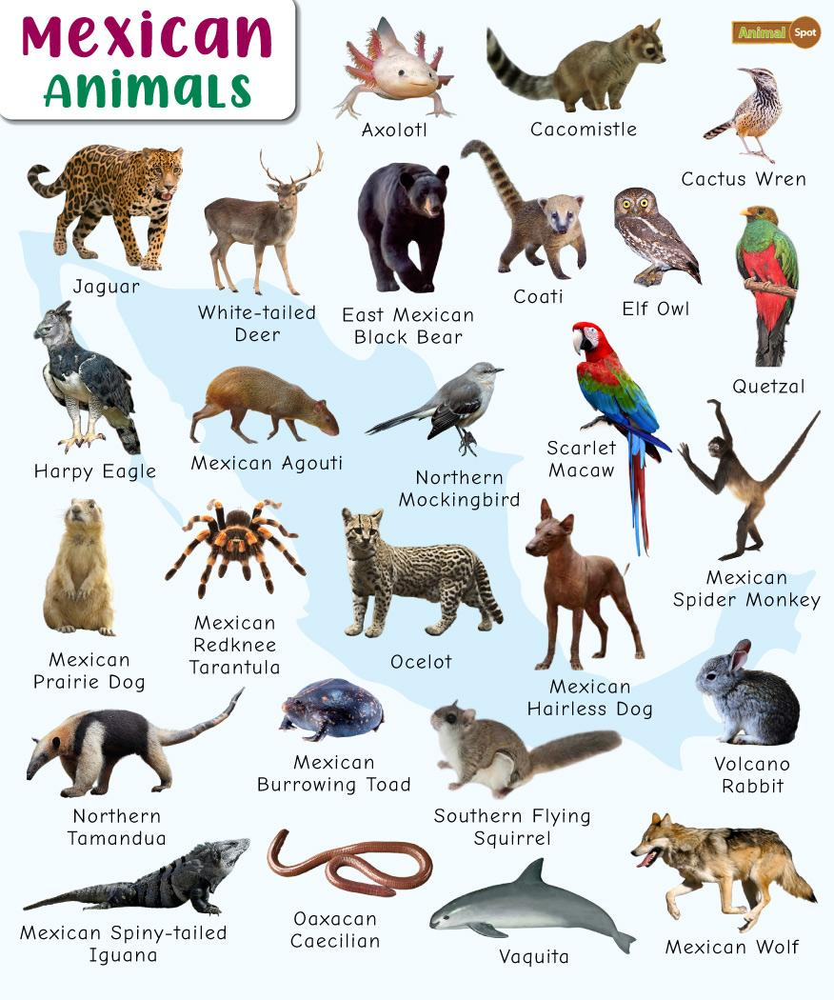

El objetivo principal de este proyecto es investigar, recopilar y compartir información detallada sobre seis especies animales muy importantes para México: el ajolote, la vaquita marina, el quetzal, el lobo mexicano, el teporingo y el jaguar. Mi intención es dar a conocer sus características, su hábitat, su alimentación y, sobre todo, la situación de riesgo en la que se encuentran actualmente.
- Identificar y describir las especies más representativas de nuestra biodiversidad.
- Explicar las causas por las que están amenazadas o en peligro de extinción.
- Informar sobre las acciones que se pueden realizar para su conservación y protección.
- Valorar la riqueza natural de México y fomentar el respeto hacia los seres vivos.
- Concientizar sobre la importancia de cuidar los ecosistemas para mantener el equilibrio de la naturaleza.
Considero que este trabajo es fundamental porque muchas veces no sabemos qué animales tan únicos tenemos en nuestro país, ni nos damos cuenta de que están desapareciendo. Al aprender sobre ellos, aprendemos también sobre nuestra cultura, nuestra historia y nuestra responsabilidad de cuidar lo que es nuestro. La biodiversidad es un tesoro y debemos conocerla para poder defenderla.
Quiero agradecer primeramente a mis padres por apoyarme y motivarme siempre a estudiar y aprender cosas nuevas. También agradezco a mi maestra/o por brindarme la oportunidad de realizar este trabajo y por enseñarnos la importancia de cuidar nuestro medio ambiente.
Agradezco también a todas las personas, instituciones y organizaciones que trabajan día a día para proteger a los animales y sus hábitats, ya que gracias a sus esfuerzos aún tenemos la oportunidad de conocer y admirar estas especies.
Finalmente, espero que este proyecto sea de su agrado y que la información aquí presentada sirva para reflexionar y tomar conciencia de que todos podemos hacer algo para salvar a nuestra fauna mexicana.
¡Gracias por su atención!